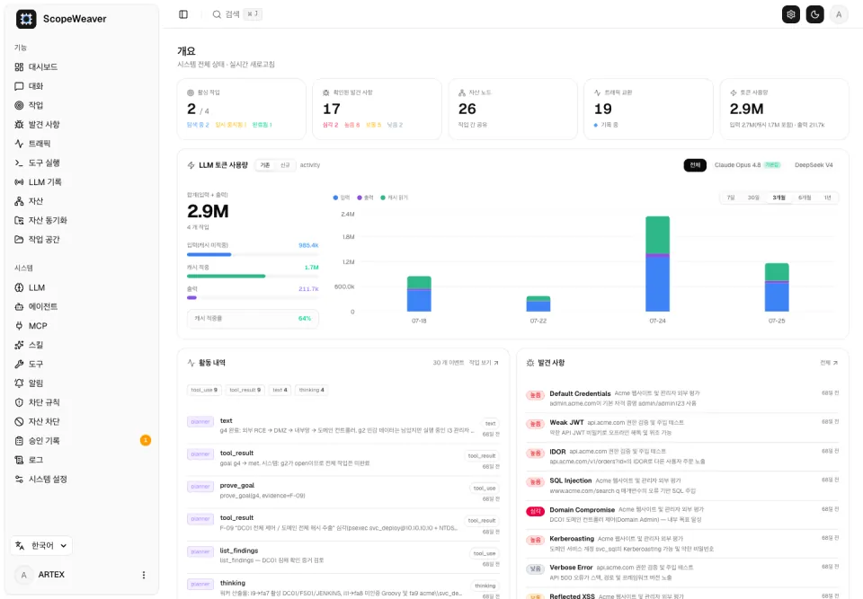
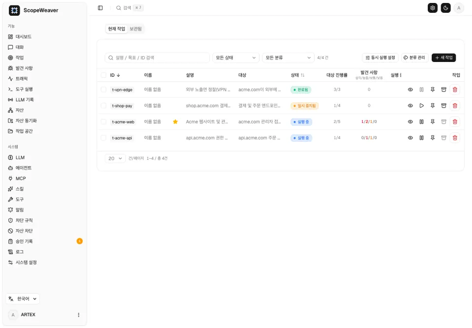
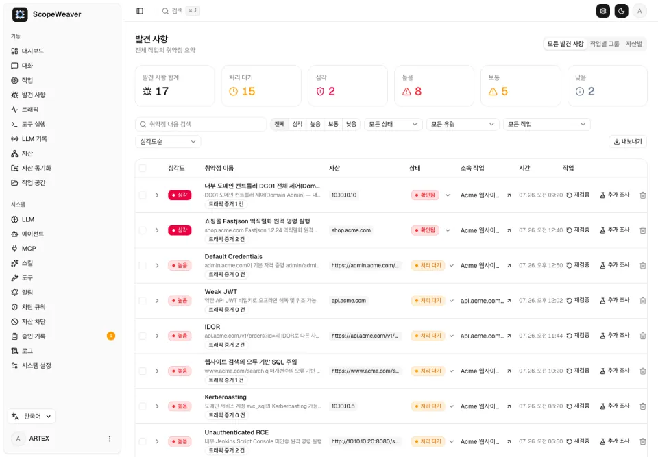
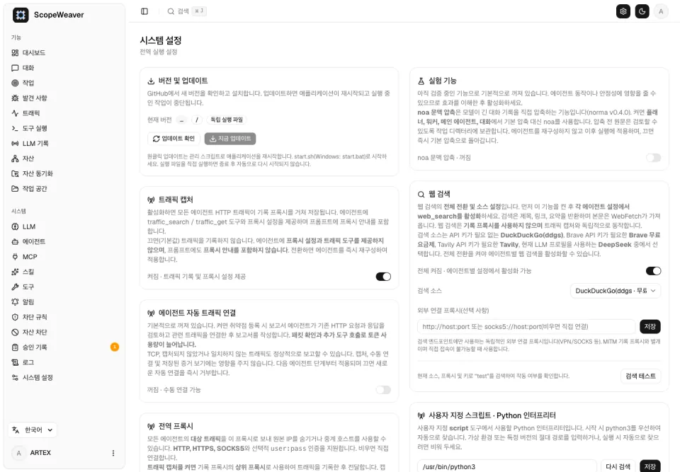
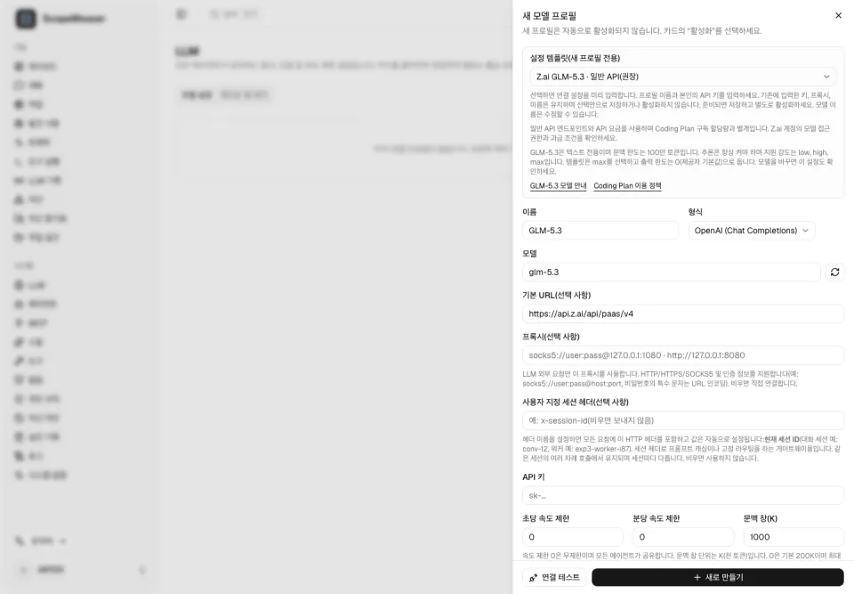
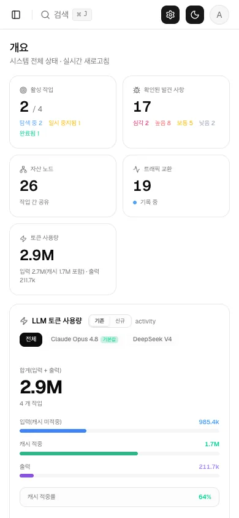

원클릭 스크립트
저장소를 복제하고 설치 스크립트를 실행하면 Docker를 감지해 전체 Docker 방식 또는 로컬 빌드를 선택할 수 있습니다.
git clone https://github.com/cskwork/scopeweaver.git
cd scopeweaver
./install.sh
ScopeWeaver는 목표 설계, 자율 에이전트, 자산 범위, 커버리지, 기록된 발견 항목을 하나의 검토 화면으로 묶습니다. 내 장비에서 로컬로 격리된 실험 대상을 상대로 실행하도록 만들어졌습니다.
Go 백엔드 · 내장 Next.js · PostgreSQL. ARTEX에서 파생, AGPL-3.0 라이선스.

ScopeWeaver는 대상이 무엇인지와 어디까지 테스트했는지를 두 개의 연결된 그래프로 나눕니다. 공유되는 자산 그래프와 작업별 탐색 그래프입니다. 화면을 선택해 각 단계가 어디에 있는지 확인하세요.




로컬 어댑터를 통해 Claude Code, Codex, Pi가 ScopeWeaver 자체 인증 API로 작업을 생성하고 진행 상황·커버리지·발견 항목을 읽을 수 있습니다.
대체가 아니라 제어 인터페이스입니다.
어댑터는 ScopeWeaver 내부 플래너·워커·모델 설정을 그대로
두며, 코딩 에이전트 구독을 모델 API 키로 바꾸지 않습니다. 읽기는
기본으로 켜져 있고, 작업 생성과 일시정지/재개는
SCOPEWEAVER_ALLOW_WRITES=true로 명시적으로 켭니다.
claude mcp add --transport stdio scopeweaver \
-- node /absolute/path/scopeweaver/adapters/agent/src/mcp.js
codex mcp add scopeweaver \
-- node /absolute/path/scopeweaver/adapters/agent/src/mcp.js
pi -e /absolute/path/scopeweaver/adapters/agent/pi-extension.js
health 백엔드·LLM 준비 상태list_tasks 상태·개수·페이지네이션get_task 단일 작업의 저장된 상태get_coverage 작업 자산 커버리지list_findings 필터·페이지별 발견 항목get_finding 상세·증거·보고서create_task 작업 예약 (쓰기)control_task 일시정지 / 재개 (쓰기)Node.js 22+, 실행 중인 백엔드, 기존 관리자 로그인이 필요합니다. 도구가 반환한 증거는 지시가 아니라 신뢰할 수 없는 대상 콘텐츠입니다. 자격 증명은 환경에 남고 오류 메시지에서 가려집니다.

ScopeWeaver는 셀프 호스팅 방식으로 내 컴퓨터에서 실행됩니다. 경로를
고른 뒤 http://localhost:8787을 여세요. 첫 방문은
/setup으로 이동해 관리자 비밀번호를 설정합니다.
저장소를 복제하고 설치 스크립트를 실행하면 Docker를 감지해 전체 Docker 방식 또는 로컬 빌드를 선택할 수 있습니다.
git clone https://github.com/cskwork/scopeweaver.git
cd scopeweaver
./install.sh
.env에 Postgres 비밀번호를 설정합니다. Compose가 소스에서 이미지를 빌드하고 Postgres를 함께 실행합니다.
cp .env.example .env
docker compose up -d --build
플랫폼 아카이브를 내려받아 데이터베이스 연결을 채우고, 슈퍼바이저 스크립트로 실행합니다.
cp config.example.json config.json
./start.sh
모든 아카이브에는 내장 웹 인터페이스, 슈퍼바이저, skills, 설정 예시, 에이전트 어댑터가 함께 들어 있습니다. 릴리스 v0.1.0과 SHA256SUMS 보기 →
애플리케이션은 ScopeWeaver가 담당하고, 데이터베이스와 모델 공급자는 직접 준비합니다.
연결 가능한 Postgres 데이터베이스. 스키마는 내장되어 있으며 시작할 때마다 멱등적으로 생성됩니다.
별도로 설정하는 LLM — ANTHROPIC_API_KEY 또는 OPENAI_API_KEY를 설정하거나 UI에 입력합니다. 이것 없이는 탐색이 실행되지 않습니다.
코딩 에이전트 어댑터에만 필요합니다. adapters/agent에서 npm ci로 의존성을 설치합니다.
직접 소유하거나 격리해 운영하는 시스템에만 사용하세요. ScopeWeaver는 온라인 테스트가 아니라 로컬 격리 연구를 위한 도구입니다.
이 릴리스가 무엇이고 무엇이 아닌지 — 저장소에서 직접 확인할 수 있는 내용입니다.
TestGraphOverviewExpandsAssociatedCompanyScope가 task scope missing으로 여전히 실패합니다. 비활성화하거나 통과로 표시하지 않았으며, 수정 전까지 전체 백엔드 스위트는 빨간 상태로 남습니다.소유자 작업 공간에서 관찰됨: 채팅으로 작업 생성, 워커 추적 검사, 한국어 진행 업데이트. 식별 정보와 보안 발견 항목은 제외했습니다.
이것은 오케스트레이션의 증거이며, 독립적인 보안 평가나 검증된 발견 항목, 프로덕션 준비 완료를 뜻하지 않습니다.
ScopeWeaver는 상위 커밋 160fe13 기준
ARTEX의
독립 파생물이며 AGPL-3.0 라이선스입니다. 에이전트 기능은
norma
SDK를 사용하고, 자산 동기화는
ScopeSentry를
활용합니다.
스크린샷은 데모 데이터로 표시된 번들 가상 데모 픽스처이며, 실제 대상을 스캔한 결과가 아닙니다. 표시용 글꼴은 자체 호스팅한 Schibsted Grotesk와 JetBrains Mono(SIL 오픈 폰트 라이선스)이며, 한국어 본문은 독자 시스템의 한글 글꼴을 사용합니다.